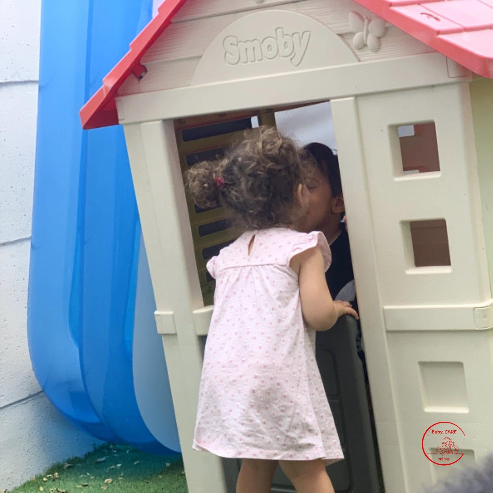

Crèche Baby-CARE
Een ecologisch verantwoorde en deelnemende crèche, waar elk kind groeit in een gezinssituatie, meertaligheid, warm en veilig.

Een attentieve en deelnemende onthaal
Baby-CARE definieert zich als een ecologisch verantwoorde en deelnemende crèche.
Ecologisch verantwoord, want we willen onze ecologische voetafdruk en invloed op het milieu beperken op twee manieren: een korte voedingsketen, duurzaam speelgoed en materialen, en het gebruik van goederen die geproduceerd en gerecycled zijn in België.
Participatief, want we werken nauw samen met alle actoren voor kinderen. De ouders, als eerste worden uitgenodigd om deel te nemen aan het leven van de crèche door hun ideeën te brengen of deelnemen aan activiteiten met de kinderen: leeswerkshop, muziek, specifieke activiteiten, enz.
Vertrouwen, samenwerking, respect en verantwoordelijkheid zijn onze vier waarden.
Opgroeien en bloeien
In een meertalige, barmhartige en verzekerde gezinssituatie, zorgen we voor kinderen van 3 maanden tot 3 jaar en nemen we actief deel aan hun persoonlijke en emotionele ontwikkeling.
Elk kind wordt vergezeld via activiteiten met veel knuffels, liefde en glimlachen (CARE: Calins, Amour, Rire Ensemble). We zetten alles in om het mentale, emotionele en sociale welzijn van de kinderen te garanderen.
De individualiteit van elk kind vormt een rijkdom van ons opvangmilieu. We respecteren dit en zetten dit op de eerste plek.
Er staat altijd een team van professionals klaar dat oog heeft voor de behoeften van elk kind en de verwachtingen van de ouders.
Activiteiten en zelfstandigheid
Door middel van verschillende activiteiten die in het Frans en het Nederlands worden aangeboden, en ook in alledaagse situaties, begeleiden we de kinderen op weg naar zelfstandigheid, waarbij we de nadruk leggen op hun creativiteit en zelfstandigheid.
We stimuleren solidariteit, samenwerking, respect voor anderen en voor jezelf, en het delen.
Praktische informatie
Adres : Buffonstraat 11, 1070 BrusselOpeningsuren : van maandag tot en met donderdag van 07u30 tot 18u00 en op vrijdag van 07u30 tot 16u00.
Bezoekuren : elke laatste woensdag van de maand om 9u30.
Gesloten :
- 2 weken in julie en 1 week in augustus tijdens de zomervakantie;
- 1 week tussen Kerst en Nieuwjaar;
- de feestdagen en andere dagen.
Enkele momenten in beeld
